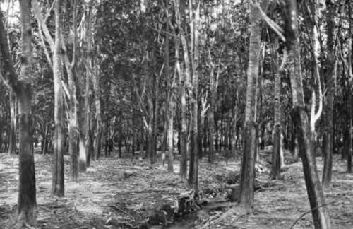

Hevea. Planting Operations. Choice Of Situation And Soil
Description
This section is from the book "Rubber And Rubber Planting", by R. H. Lock. Also available from Amazon: Rubber And Rubber Planting.
Hevea. Planting Operations. Choice Of Situation And Soil
THE hardiness of the Hevea rubber tree in the different countries of its adoption has been the occasion of some surprise. In Ceylon the trees have made remarkably good growth in situations where, in the early days of their introduction to the country, botanical experts would never have supposed them capable of growing with permanent success. Anywhere in moist climates within ten degrees of the equator Hevea will grow, though not luxuriantly, even in rocky situations up to 2500 feet elevation. Here it may be seen entering into competition with the still more hardy tea-bush in its power of making the best of unfavourable circumstances. It will also grow in comparatively dry districts, if adequately protected from wind. The soil at Henaratgoda is remarkably poor; nevertheless, as we saw in the last chapter, phenomenal yields have been obtained there from old trees. On such a soil, however, the early growth of the trees is generally slow. In fact the appearance of the Henaratgoda trees during the first few years after their introduction, led to the erroneous conclusion that on rubber estates in Ceylon tapping could not profitably be begun until the trees had reached an age of ten years at least.
It is on rich alluvial soils in the moist low country that the tree makes its most rapid growth and gives its earliest and heaviest yields. The low-lying alluvial soils of the Malay Peninsula and the light and fertile volcanic soils of Sumatra have alike shown themselves to be admirably suited for the growth of Hevea. Even these soils would not be reckoned particularly rich according to the ideas of farmers in a temperate climate. Some idea of the relative proportions in which the different constituents occur in different soils may be obtained from the following table of analyses.
Table XXV. Analyses Of Rubber Soils
A | B | C | D | |
Organic matter and combined water ... | 24.080 | 5.12 | 7.8 | 4.20 |
Nitrogen ...... | 0.667 | 0.27 | 0.154 | 0.099 |
Potash ...... | 0.131 | 0.26 | 0.046 | 0.274 |
Phosphoric acid ... | 0.025 | 0.072 | 0.031 | 0.114 |
Lime......... | 0.284 | trace | 0.040 | 2.468 |
A is an alluvial clay from the Malay Peninsula, analysed by Kelway Bamber.
B is a Sumatran soil analysed by Schidrowitz.
Plate V
Hevea Rubber on Swampy Land
C is the "cabooky" soil at Henaratgoda, Ceylon, analysed by Bruce.
D is an analysis by Dyer of soil at Rothamsted upon which wheat had been grown continuously for fifty years without manure. The low percentages of organic matter and nitrogen are to be associated with the exhaustion produced by this continuous cropping. Nevertheless this soil is still much richer in mineral constituents than either of the three examples of tropical soils. Even the Malay soil, rich as it is in organic matter and nitrogen, is very poor as regards phosphoric acid, and by no means rich in potash. In spite of such deficiencies the warm moist climate of the tropics gives rise to an abundant growth of vegetation.
In short, it may be asserted that Hevea can be grown to a profit on almost any soil in the latitude of Ceylon up to an elevation of 2000 feet, provided the rainfall exceeds 75 inches a year, and provided a situation is chosen which is not exposed to strong winds, especially at the dry season of the year. On the other hand, the richer the soil and the lower the altitude the better, provided that on swampy lands good drainage be provided. The best test of a soil much better than the test of chemical analysis is the character of the vegetation growing upon it If the growth of forest over a given area is luxuriant, other conditions being favourable, then a good growth of rubber is assured when the forest is cleared. And if it is intended to plant rubber where other agricultural products are already established, the fact of a good return from crops of any other kind may be taken as an earnest of good crops of rubber to come.
Throughout the tropics good forest land is always best for planting if it is obtainable, and it is greatly superior to grass land or land which has already been cropped. The greater part of the rubber in the Malay Peninsula has been planted where virgin forests have been cleared, and in every country this is one of the most frequent conditions. In Ceylon a great deal of rubber has also been planted through existing fields of tea, in Sumatra on old tobacco land, and in Java amongst various other products. Where such methods are adopted the cost of clearing and weeding are debited to the original crops, but the growth of the rubber must be expected to be considerably slower than on an original clearing opened for rubber alone. The latter method is therefore the one to which we shall devote the most attention.
In selecting the site for a rubber estate several other considerations besides soil and climate demand attention. Foremost among these is the question of transport Rubber is a commodity of which the bulk is relatively small in comparison with its present value, but the weight of the produce from a large estate is by no means a negligible quantity. The conveyance of food and other necessities for the labour force involves a considerable amount of transport, and it must not be forgotten that heavy machinery will have to be introduced when the time comes for building the factory. Ready access to a railway, canal or seaport is therefore desirable, and a special feeding canal or road may have to be constructed. The development of railways has now proceeded to a considerable extent in Ceylon, Java and the Federated Malay States, as well as in India. In the low-lying coastal regions of the Malay Peninsula, water transport is extensively adopted on the canals which are necessary for purposes of drainage. Roads are being widely constructed, and the system of these in Ceylon is particularly extensive and excellent. Here too signs are not wanting that the now universal bullock cart may one day be largely replaced by the motor lorry.
Continue to: